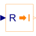

RealToIntegerConvert Real to Integer signal |

|
Information
This information is part of the Modelica Standard Library maintained by the Modelica Association.
This block computes the output y as nearest integer value of the input u:
y = integer( floor( u + 0.5 ) ) for u > 0; y = integer( ceil ( u - 0.5 ) ) for u < 0;
Connectors (2)
| u |
Type: RealInput Description: Connector of Real input signal |
|
|---|---|---|
| y |
Type: IntegerOutput Description: Connector of Integer output signal |
Used in Examples (1)
|
Modelica.Blocks.Examples Demonstrates the usage of blocks from Modelica.Blocks.MathInteger |
Used in Components (2)
|
Modelica.Blocks.Sources Generate an Integer output signal based on a table matrix with [time, yi] values |
|
|
Modelica.Clocked.ClockSignals.Clocks.Rotational Event clock generating a clock tick each time an observed input angle changed for a rotational-interval given as variable input |